Pearl Harbor, Part 3: Air Raid, Pearl Harbor
Every warning arrives too late, then the planes come.
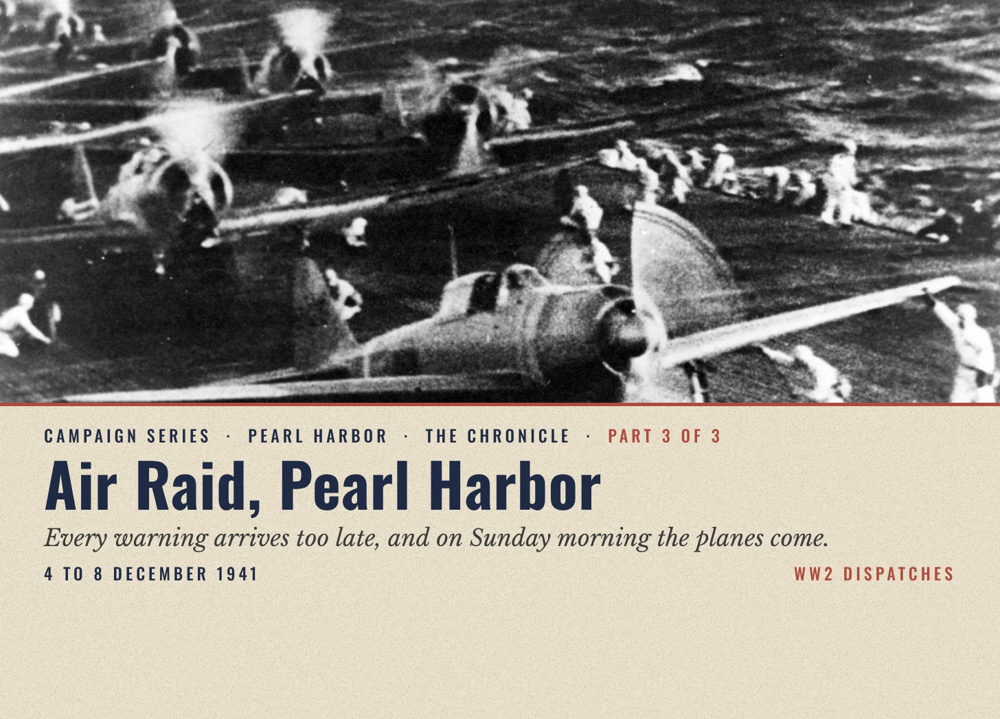
Zero fighters warm up on a Japanese carrier's flight deck before the launch for Pearl Harbor, 7 December 1941. Captured Japanese photograph, U.S. Navy, National Archives 80-G-71198, public domain.
By the first week of December 1941 the carriers had crossed most of the North Pacific without being seen, and on 4 December, Tokyo time, they turned south for Hawaii. Everything that could still stop them now depended on someone, somewhere, putting the pieces together in time.
This is the last of three parts on the road to Pearl Harbor. Part 2 ended with Japan's embassies burning their codes. Here the final days run out: a secret plan in a Chicago newspaper, an empty row of carrier berths, thirteen decoded pages on the President's desk, a Sunday morning on Oahu, and a joint session of Congress.
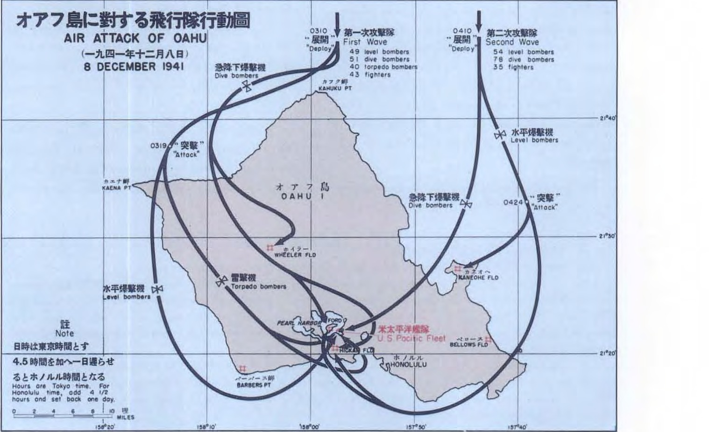
The Leak
Chicago, 4 December 1941
On the morning of 4 December, readers of the Chicago Tribune opened their paper to a banner headline: "F.D.R.'S WAR PLANS!" Reporter Chesly Manly had obtained a copy of the Army and Navy's most secret planning study, the estimate known inside the War Department as the Victory Program and to the planners as Rainbow Five. It laid out how the United States would fight Germany if it came to war, with an army of some ten million men and five million of them sent overseas. The Washington Times Herald printed the same story.
In Washington the leak landed like a bomb. Isolationists in Congress called it proof that the President was planning a war he had promised to stay out of. Investigators went looking for the source, and suspicion fell on one of the plan's authors, Major Albert Wedemeyer, a German trained staff officer with friends among the isolationists. He was cleared, and the leaker was never officially named.
What nobody could know that morning was how little time the argument had left. The plan in the paper was built around a war with Germany. The war that came three days later began in the Pacific.
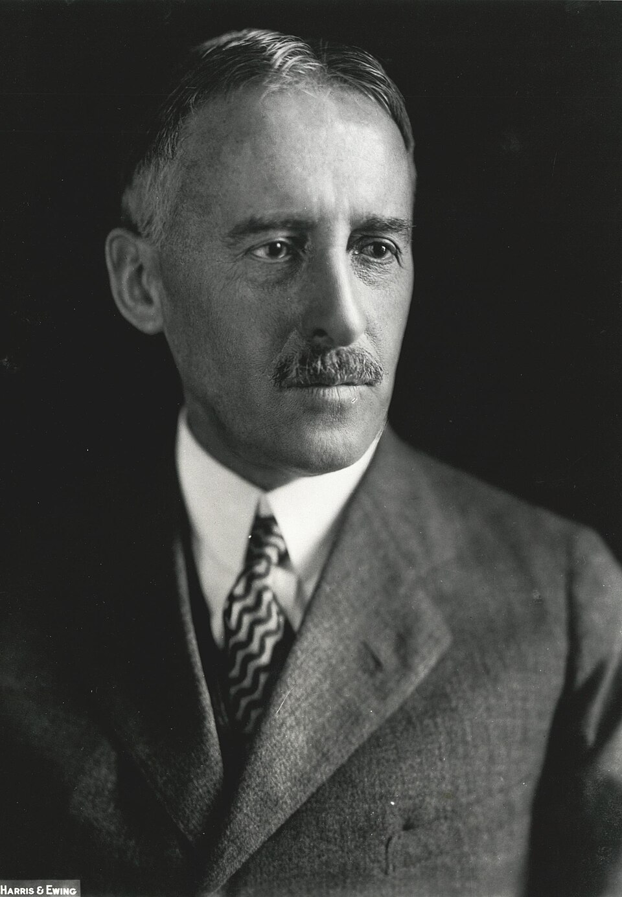
The Empty Berths
Pearl Harbor, 5 December 1941
On the morning of 5 December the carrier Lexington got underway from Pearl Harbor with Rear Admiral John Newton's task force, bound for Midway with eighteen Marine dive bombers to reinforce the island. When she cleared the channel, there were no aircraft carriers left in Pearl Harbor. Enterprise was still at sea, coming home from delivering fighters to Wake. Saratoga was on the West Coast.
The same day the battleships Arizona, Nevada and Oklahoma came back into the harbor from a night of training at sea and moored along Ford Island. By the weekend the battle line of the Pacific Fleet was tied up in the harbor, much of it moored in pairs along Ford Island, the way it usually spent a weekend in port.
Both moves made sense. Sending the carriers west carried out what the war warning seemed to ask: reinforce the outer islands that stood in Japan's way. Keeping the battleships in harbor on weekends was routine. Neither would have looked like a gamble to anyone who believed the blow was coming in the Philippines or Malaya.
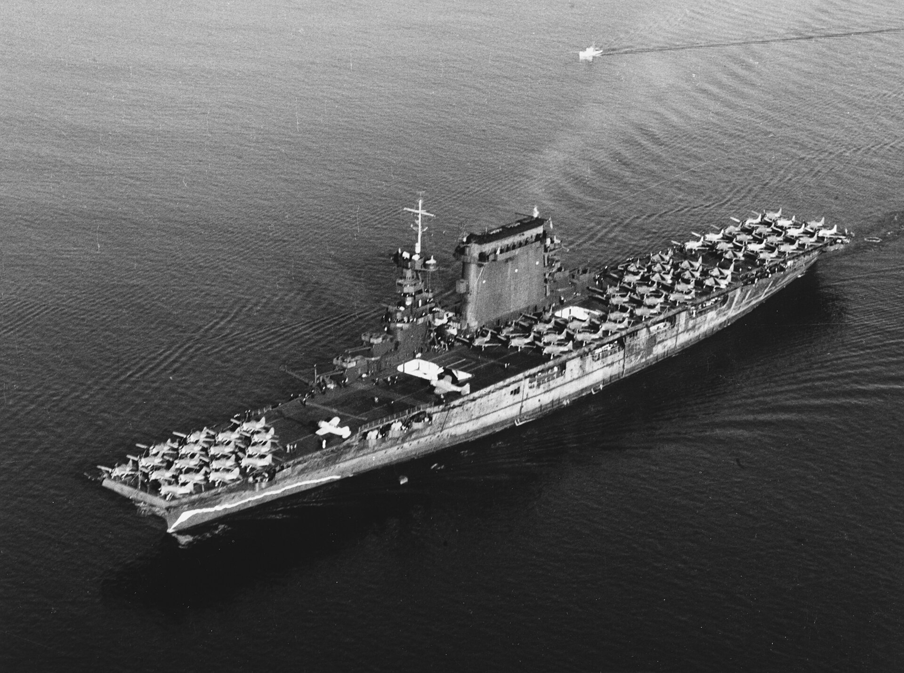
Thirteen Parts
Washington, 6 December 1941
On Saturday, 6 December, Navy codebreakers in Washington began decoding a long message from Tokyo to its embassy, Japan's formal answer to the American note of 26 November. It came in fourteen parts. By evening thirteen were in hand, all in English. The fourteenth, the one that would say what Japan intended, had not arrived.
At about 9:30 that night Lieutenant Lester Schulz carried the thirteen parts in a locked pouch to the President's study in the White House. Roosevelt read them for about ten minutes and handed them to Harry Hopkins, who read them and handed them back. Schulz told Congress what came next. The President, he said, turned toward Hopkins and said, in substance, "this means war." The two men talked about where Japan might strike first. Hopkins thought Indochina. Neither mentioned Hawaii.
Half an hour earlier, the President had sent a personal appeal directly to the Emperor.
Primary document. President Roosevelt to Emperor Hirohito, sent the evening of 6 December 1941
"I address myself to Your Majesty at this moment in the fervent hope that Your Majesty may, as I am doing, give thought in this definite emergency to ways of dispelling the dark clouds. I am confident that both of us, for the sake of the peoples not only of our own great countries but for the sake of humanity in neighboring territories, have a sacred duty to restore traditional amity and prevent further death and destruction in the world."
Department of State Bulletin, 13 December 1941
The same evening, nearly five thousand miles away, the Japanese consulate in Honolulu sent Tokyo its last report on the harbor. American codebreakers had been reading these reports for months, but this one would not be decoded in Washington until after the attack.
From the record. Japanese consulate, Honolulu, to Tokyo, 6 December 1941
"The following ships were observed at anchor on the 6th: 9 battleships, 3 light cruisers, 3 submarine tenders, 17 destroyers ... (the heavy cruisers and airplane carriers have all left). ... It appears that no air reconnaissance is being conducted by the fleet air arm."
U.S. Navy translation, Pearl Harbor Attack hearings
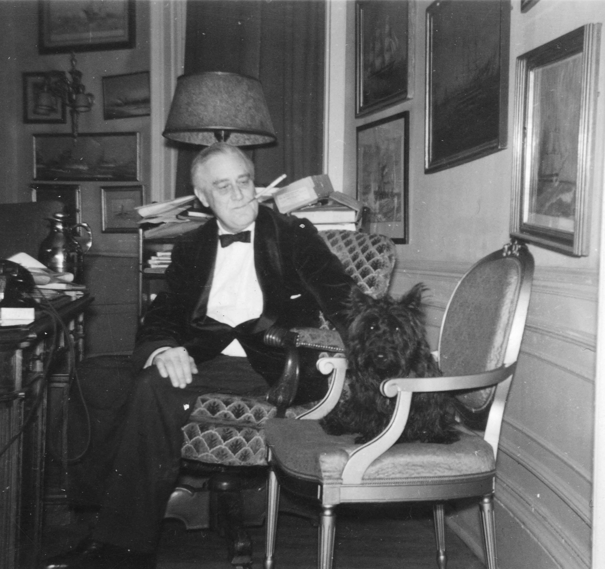
Sunday Morning
Oahu, 7 December 1941
The first sign came from the sea. At 3:42 that morning the minesweeper Condor saw a periscope near the entrance buoys to Pearl Harbor and signaled the destroyer Ward, which searched for hours without result. In the dark north of the harbor, five large Japanese submarines had already released the midget submarines riding on their decks, each with a crew of two and orders to get inside the harbor and wait.
At 6:45 the Ward found one. It was following the supply ship Antares toward the harbor entrance, its conning tower just above the water. The Ward fired twice from almost point blank range, hit it at the base of the conning tower, and dropped depth charges as it sank.
From the record. USS Ward to the Commandant, Fourteenth Naval District, 6:53 a.m., 7 December 1941
"We have attacked fired upon and dropped depth charges upon submarine operating in defensive sea area."
Hewitt Inquiry, Pearl Harbor Attack hearings
It was the first American shot of the Pacific war. The report went up the chain of command, where it met months of false submarine alarms, and the officers who read it wanted it confirmed before they acted.
North of the island, the six carriers had turned into the wind about 200 miles out and launched the first wave at about six. Captain Mitsuo Fuchida led it. After the war he told American interrogators what the pilots had been told to look for.
In their words. Captain Mitsuo Fuchida, leader of the attack, interrogated in Tokyo, 10 October 1945
"First in importance were aircraft carriers, second battleships; but we did not know their exact location. We knew they were in FORD Island Passage, but did not know where. ... I knew that there would be planes, but did not know they would be as closely packed as at WHEELER."
U.S. Strategic Bombing Survey, Interrogation Nav No. 29
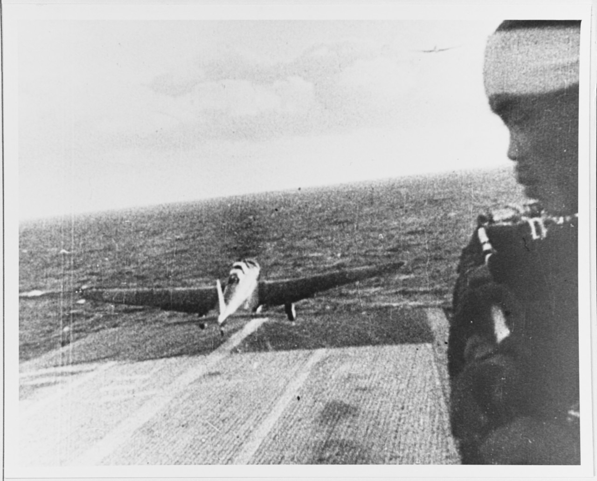
At the Opana radar station on the northern tip of Oahu, Privates Joseph Lockard and George Elliott were due to shut down at seven. Lockard, practicing on the set, picked up a mass of planes about 130 miles to the north and closing. A little after seven they telephoned the Army's information center. The only officer on duty, Lieutenant Kermit Tyler, was there for training and had been on watch once before. A flight of B 17 bombers was due from the mainland that morning, and the radio had played Hawaiian music all night, which he knew was done to guide incoming bombers. He thanked them and did nothing.
At 7:53 Fuchida signaled the carriers that complete surprise had been achieved. The first bombs fell on Ford Island at 7:57, and a minute later the Navy's radio broadcast the words that would become the most famous message of the day.
From the record. Patrol Wing 2, Ford Island, to all ships present, 7:58 a.m., 7 December 1941
"AIR RAID PEARL HARBOR. THIS IS NO DRILL."
Hewitt Inquiry, Pearl Harbor Attack hearings
Torpedo planes came in low over the harbor and struck the battleships moored along Ford Island. Dive bombers and fighters hit Wheeler, Hickam, Kaneohe, Ewa and Bellows, where the Army's planes stood wingtip to wingtip, parked that way to guard against saboteurs. At about 8:10 a bomb pierced the Arizona's forward deck and set off her magazines. The explosion killed 1,177 of her crew. The Oklahoma rolled over with hundreds of men trapped inside. A second wave came in shortly before nine.
By ten it was over. All eight battleships in the harbor had been sunk or damaged, and nearly 350 American aircraft destroyed or damaged on the ground and in the air. More than 2,300 Americans were dead. Japan lost 29 aircraft and all five midget submarines. The three American carriers, the targets Fuchida had been told mattered most, were not there.
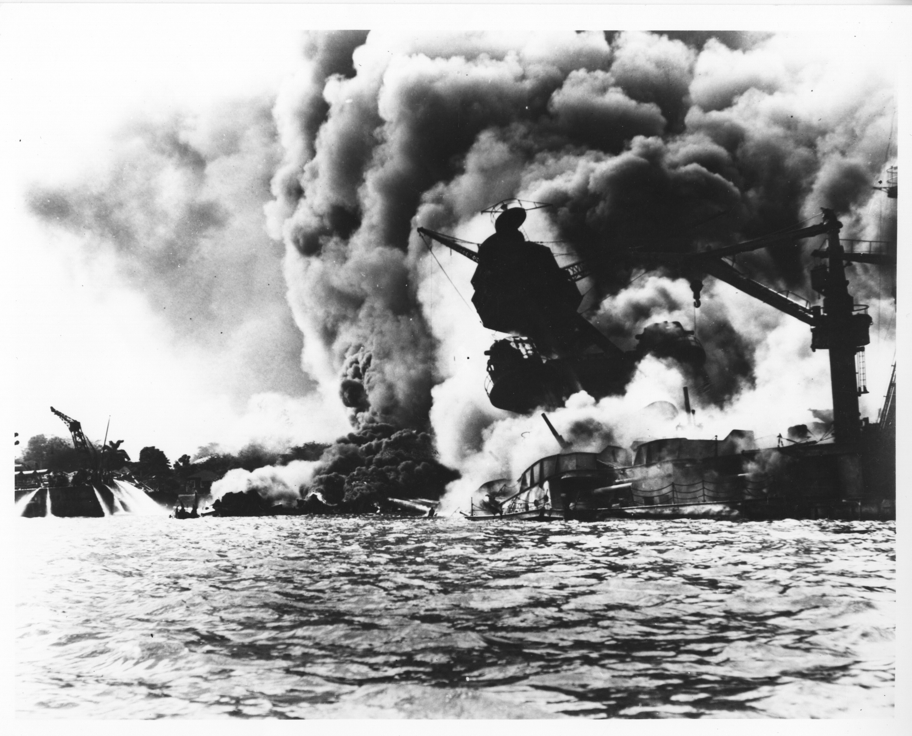
In Washington it was the middle of the day. That morning the fourteenth part had arrived, breaking off the negotiations, along with an order that it be delivered at exactly 1:00 p.m. The Army's chief of staff, General George Marshall, saw what the hour might mean and sent a warning to the Pacific commands. Atmospheric trouble blocked the Army's radio to Hawaii, so it went by commercial cable, and it reached Honolulu after the bombs had fallen.
The Japanese envoys, delayed by the slow typing of their own embassy, were not received by Secretary Hull until 2:20, more than an hour after the attack began. Hull already knew. He read the note and turned on Ambassador Nomura.
In their words. Secretary of State Cordell Hull to Ambassador Kichisaburo Nomura, 2:20 p.m., 7 December 1941
"I must say that in all my conversations with you during the last nine months I have never uttered one word of untruth. This is borne out absolutely by the record. In all my 50 years of public service I have never seen a document that was more crowded with infamous falsehoods and distortions, infamous falsehoods and distortions on a scale so huge that I never imagined until today that any Government on this planet was capable of uttering them."
Department of State Bulletin, 13 December 1941
By the middle of the afternoon in the East, radio bulletins were breaking into the Sunday programs.
A Date Which Will Live in Infamy
Washington, 8 December 1941
At 12:30 on Monday, Franklin Roosevelt stood before a joint session of Congress. "Yesterday, December 7th, 1941, a date which will live in infamy," he began, "the United States of America was suddenly and deliberately attacked by naval and air forces of the Empire of Japan." Then he named the rest of what had happened overnight.
Primary document. President Roosevelt's address to Congress, 8 December 1941
"Yesterday the Japanese Government also launched an attack against Malaya. Last night Japanese forces attacked Hong Kong. Last night Japanese forces attacked Guam. Last night Japanese forces attacked the Philippine Islands. Last night Japanese forces attacked Wake Island. This morning the Japanese attacked Midway Island. ... No matter how long it may take us to overcome this premeditated invasion, the American people in their righteous might will win through to absolute victory."
Congressional Record, 8 December 1941
The speech took about seven minutes. Within the hour the Senate voted 82 to 0 for war, and the House 388 to 1. At 4:10 that afternoon the President signed the declaration of war against Japan.
Twelve days earlier, six carriers had slipped out of a fogbound bay in the Kurils while the men who might have stopped them read the warnings and looked the wrong way. Every one of those warnings is in this book. Each, on its own, pointed somewhere else.
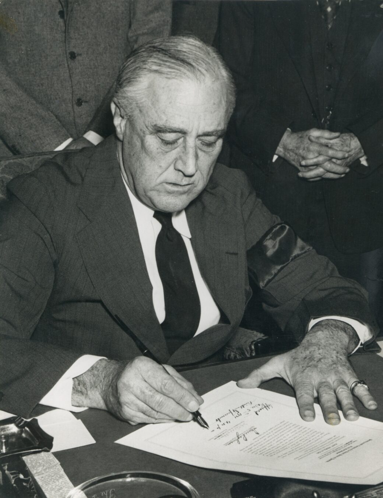
This completes the Pearl Harbor volume of the Campaign Series. The next volume, the Battle of the Bulge, begins with 16 December 1944, told day by day at 6:30 each morning.
Day by Day: Days 9 to 13
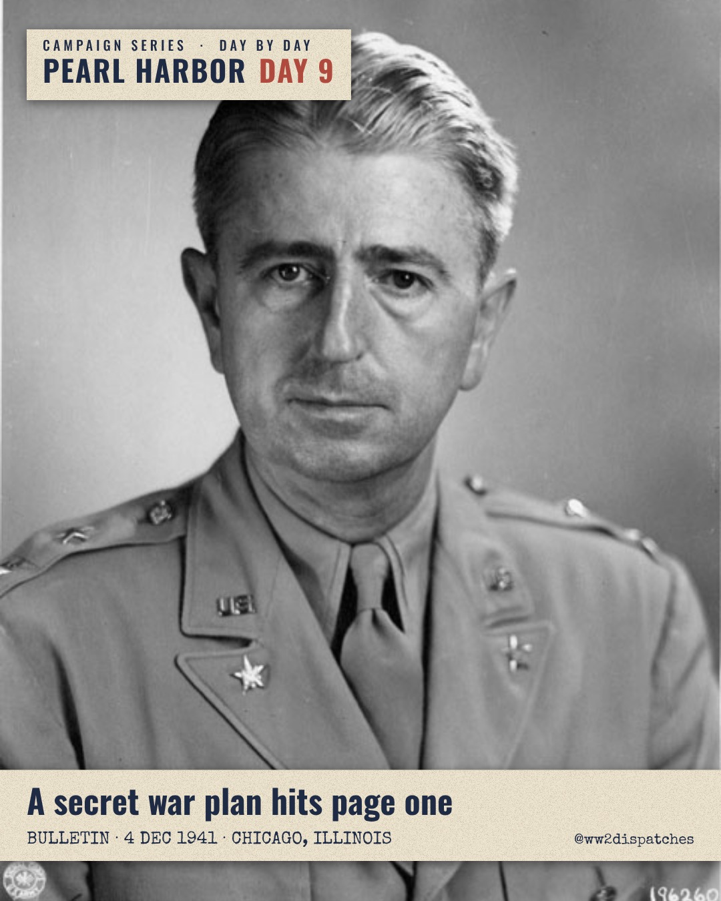
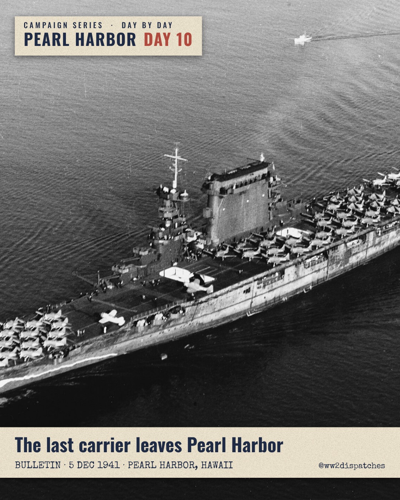
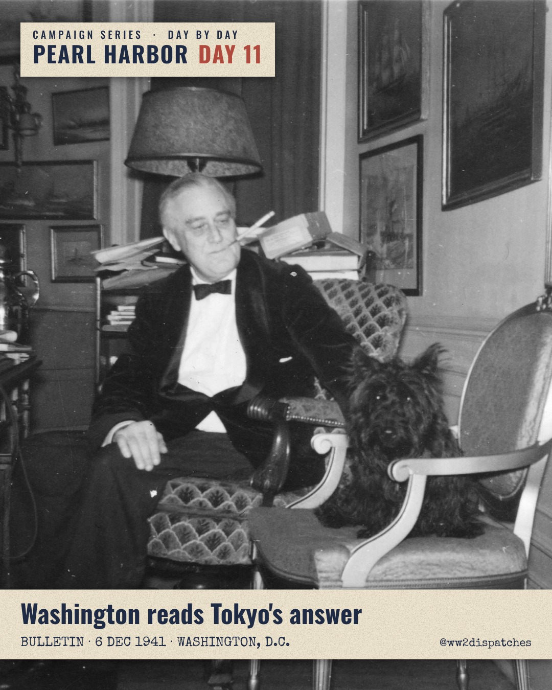
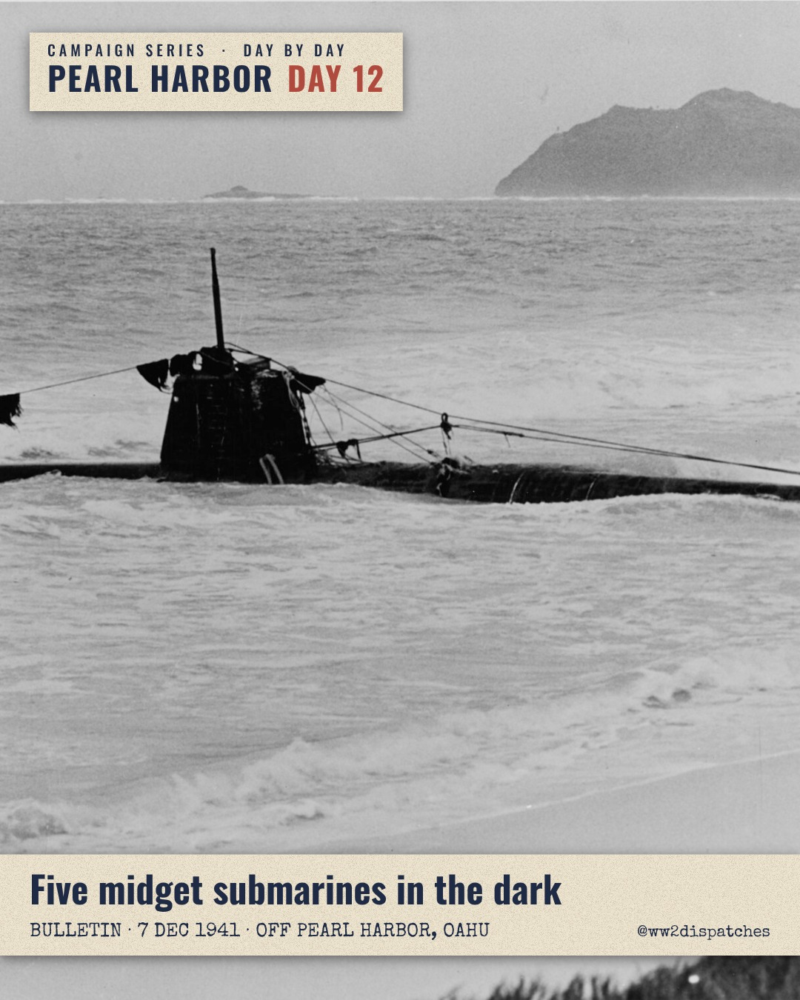
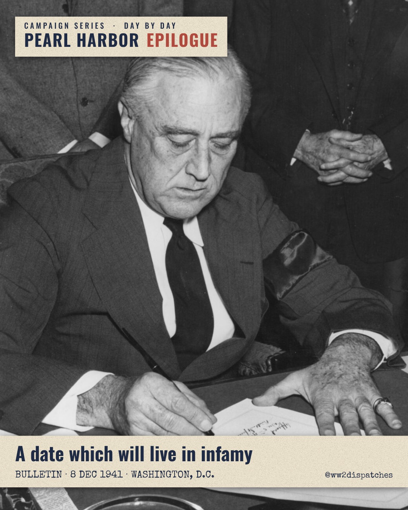
The daily posts behind this part, as they ran at dawn on X, Instagram, Threads and Facebook.
Sources
- Maps: U.S. Army, Reports of General MacArthur, Vol. II, Part I, Japanese Operations in the Southwest Pacific Area (1966), Plate No. 13 (air attack of Oahu).
- The Rainbow Five leak: Chicago Tribune, 4 December 1941; American Heritage, "The Big Leak"; HistoryNet, "Who Leaked FDR's War Plans?"
- Lexington, Enterprise and the battleships: Pacific Wrecks, 5 December 1941; Naval History and Heritage Command.
- The thirteen parts and the President's study: testimony of Lt. Lester R. Schulz, Joint Committee on the Investigation of the Pearl Harbor Attack, 1946.
- The President's message to the Emperor, the fourteen part reply and Hull's words to Nomura: Department of State Bulletin, Vol. V, No. 129, 13 December 1941 (ibiblio.org/hyperwar).
- The Honolulu consulate's report of 6 December: U.S. Navy translation, Pearl Harbor Attack hearings.
- Condor, Ward, Opana and the first warning: Hewitt Inquiry narrative, "The Japanese Attack on Pearl Harbor" (ibiblio.org/pha).
- Fuchida's account: U.S. Strategic Bombing Survey, Interrogations of Japanese Officials, Nav No. 29, Tokyo, 10 October 1945.
- The launch point and the approach: U.S. Strategic Bombing Survey, The Campaigns of the Pacific War (1946).
- Losses: National Park Service, Pearl Harbor National Memorial; The National WWII Museum.
- The address to Congress and the votes: Congressional Record and House roll call, 8 December 1941 (ibiblio.org/pha; National Archives, DocsTeach).